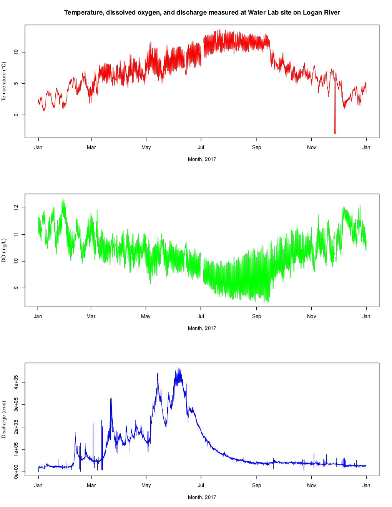

Entry 36¶
Temperature, dissolved oxygen, and discharge measured at Water Lab site of Logan River.¶
Muhammad Rezaul Haider
Using Statistical Package R to Access and Visualize Hydrologic Data from Web Services.
With the advent of wireless technology and in situ sensors, it has been customary to collect hydrologic data at higher temporal and spatial resolutions (Jones et al., 2015). Thus, there is an increasing demand for automated tool for quick retrieval, analysis, and visualization of hydrologic data in order to convey message to concerned authority for speedy management action. River temperature is a master variable for many aquatic processes (Cardenas et al., 2014). The statistical package R comes with different data retrieval packages to retrieve data from different sources and excellent plotting functions for visualization of data. This report demonstrates the use of R to retrieve data from the web services.
Then data visualization was provided with some plots.
WaterML package of R (codes attached) was used to retrieve time-series data measured at the Utah Water Research Laboratory west bridge on the Logan River GAMUT (Gradients Along Mountain to Urban Transitions) network, Utah, USA. Information on the variables measured and site was obtained by using “GetVariables” and “GetSites” functions. This site has a site code of “LR_WaterLab_AA”, and is located in Cache County. Out of the many variables, quality controlled (Quality control level = 1) water temperature (iutah:WaterTemp_EXO), dissolved oxygen (iutah:ODO), and derived discharge data (Quality control level = 2) for the year 2017 were first fetched from the web interface by using “GetValues”, and “subset” function. Then these time series were plotted using the “plot” command. From the trend, we see that with increase in water temperature there is a decease in dissolved oxygen. Discharge is the highest in the month of June. The maximum, minimum, and mean temperature for the year 2017 were found to be 15.84°C, -0.06°C, and 7.75°C, respectively. Temperature of the Logan River was well below 20°C all the year in 2017 thus meeting the state water quality standard (Water Quality Standards. (2016).
This report demonstrates the use of R to automate the retrieving data from web interface, their analysis, and reproducible visualizations of data. It’s a powerful tool for the hydrologists to retrieve bulk volume of data from different web sources and producing nice visualizations.
References:
Cardenas, M. B., Doering, M., Rivas, D.S., Galdeano, C., and Neilson B. T. (2014). Analysis of the temperature dynamics of a proglacial river using time-lapse thermal imaging and energy balance modeling. Journal of Hydrology, 519, 1963–1973. http://dx.doi.org/10.1016/j.jhydrol.2014.09.079.
Jones, A. S., Horsburgh J. S., Reeder S.L., Ramirez M, and Caraballo J. (2015). A data management and publication workflow for a large-scale, heterogeneous sensor network. Environ Monit Assess (2015) 187:348. DOI 10.1007/s10661-015-4594-3.
Water Quality Standards. (2016). Classification of Waters of the State. http://www.rules.utah.gov/publicat/code/r317/r317-002.htm#E15
Code and data: 1